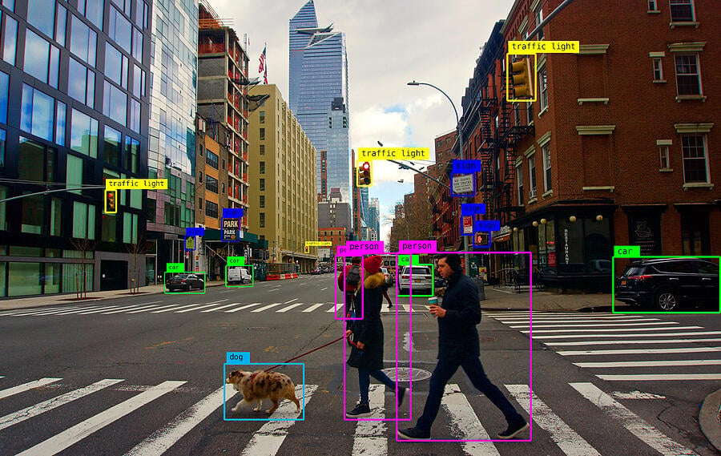
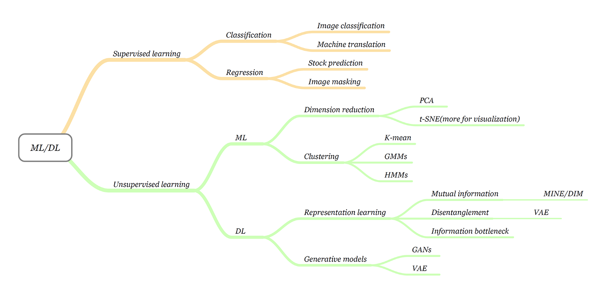

“Simplicity is the soul of efficiency.” – Austin Freeman
Computer Architecture
In computer engineering, computer architecture is a description of the structure of a computer system made from component parts.It can sometimes be a high-level description that ignores details of the implementation. At a more detailed level, the description may include the instruction set architecture design, microarchitecture design, logic design, and implementation
Cryptocurrency-predicting RNN Model
DR Build and train an Bidirectional LSTM Deep Neural Network for Time Series prediction in TensorFlow 2. Use the model to predict the future Bitcoin price.Neural Network models known as Recurrent Neural Networks (RNNs) just for this purpose.RNNs allow using the output from the model as a new input for the same model. The process can be repeated indefinitely.In this project, Environment and tools are scikit-learn ,seaborn, numpy, pandas and matplotlib.
Netflix Clone
This project is a simplified front end and backend clone of Netflix. This project was bootstrapped with Create React App.A Netflix Clone App built using React js , Material UI & OMDb API that allows searching of 1000+ movies and provides information about their plot, IMDB rating, MetaScore, Genre, and Year in which it is published, along with high-quality audio and video streaming.
Customer Segmentation
Customer Segmentation is the subdivision of a market into discrete customer groups that share similar characteristics. Specify number of clusters K,Initialize centroids by first shuffling the dataset and then randomly selecting K data points for the centroids without replacement,Keep iterating until there is no change to the centroids. i.e assignment of data points to clusters isn’t changing.Environment and tools are scikit-learn ,seaborn, numpy, pandas and matplotlib
Fix the cause,
not
the symptom
Contact
“Any fool can write code that a computer can understand. Good programmers write code that humans can understand.” – Martin Fowler
Anthony
Good things happen to those who hustle. Anaïs Nin
Object Detection
“Fix the cause, not the symptom.” – Steve Maguire

An object detection technique lets you understand the details of an image or a video as it allows for the recognition, localization, and detection of multiple objects within an image. Object detection from a video in video surveillance applications is the major task these days.
Start Time:
09-2022
Finish Time:
10-2022
Machine Learning
Once you choose hope, anything’s possible. Christopher Reeve

Machine learning is an important component of the growing field of data science. Through the use of statistical methods, algorithms are trained to make classifications or predictions, and to uncover key insights in data mining projects. These insights subsequently drive decision making within applications and businesses, ideally impacting key growth metrics. As big data continues to expand and grow, the market demand for data scientists will increase. They will be required to help identify the most relevant business questions and the data to answer them.
Machine learning algorithms are typically created using frameworks that accelerate solution development, such as TensorFlow and PyTorch.
19 machine learning projects have been done
Database and Big Data
“Make it work, make it right, make it fast.” – Kent Beck
Big data databases store petabytes of unstructured, semi-structured and structured data without rigid schemas. They are mostly NoSQL (non-relational) databases built on a horizontal architecture, which enable quick and cost-effective processing of large volumes of big data as well as multiple concurrent queries.
a database is an organized collection of data stored and accessed electronically. Small databases can be stored on a file system, while large databases are hosted on computer clusters or cloud storage. The design of databases spans formal techniques and practical considerations, including data modeling, efficient data representation and storage, query languages, security and privacy of sensitive data, and distributed computing issues, including supporting concurrent access and fault tolerance.
A database management system (DBMS) is the software that interacts with end users, applications, and the database itself to capture and analyze the data. The DBMS software additionally encompasses the core facilities provided to administer the database. The sum total of the database, the DBMS and the associated applications can be referred to as a database system. Often the term "database" is also used loosely to refer to any of the DBMS, the database system or an application associated with the database.